Full-stack platform · Vue 3 · Spring Boot · PostgreSQL · Claude API
A full optical store platform — customer shop, staff admin, in-store POS, and an AI assistant that answers business questions from real data.

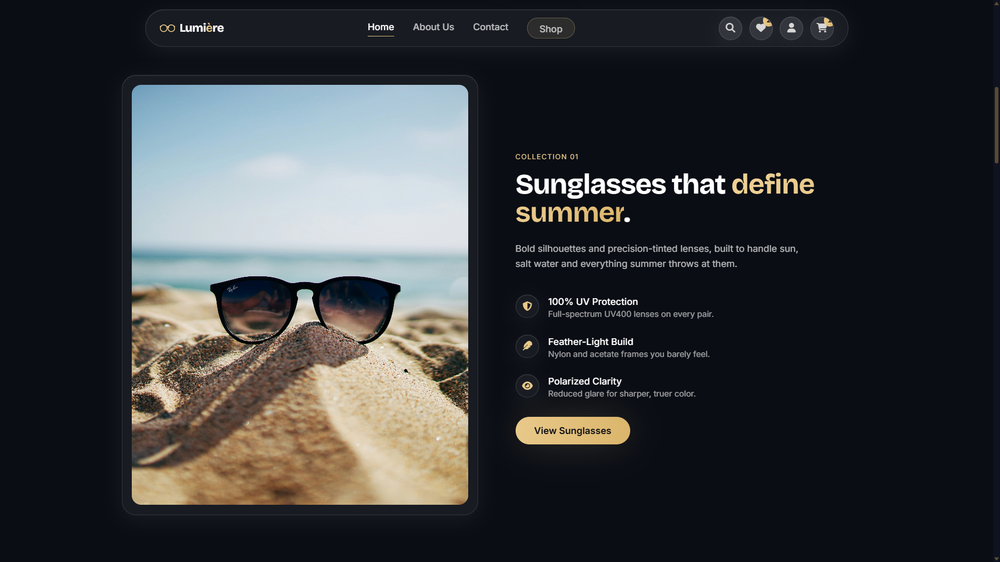
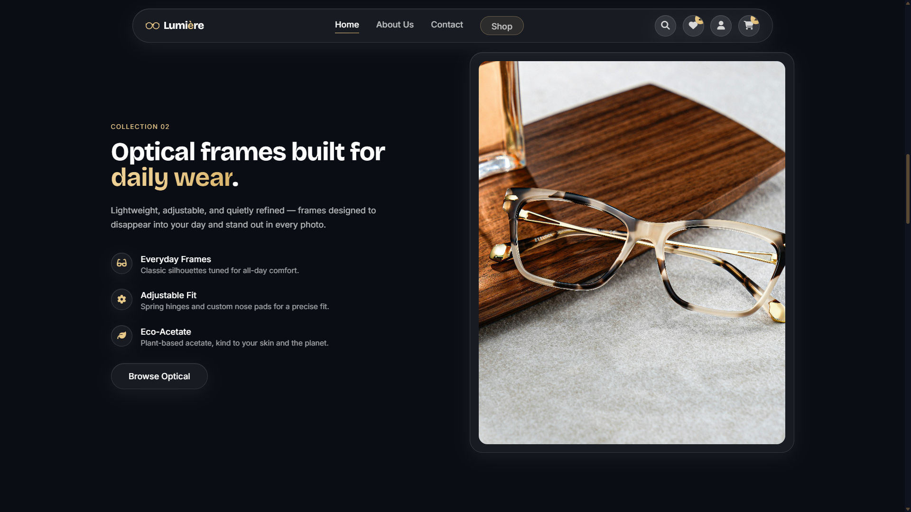
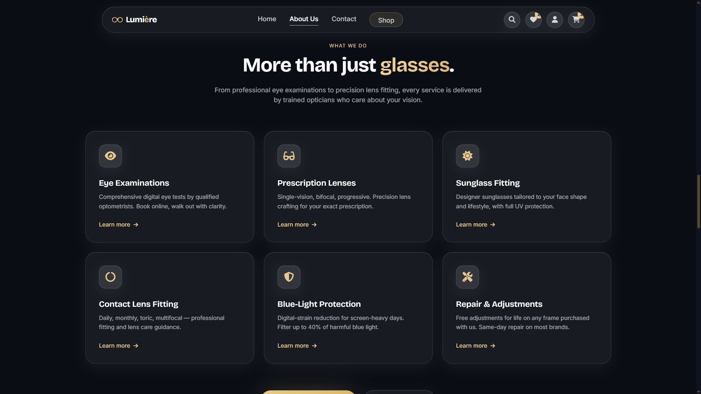
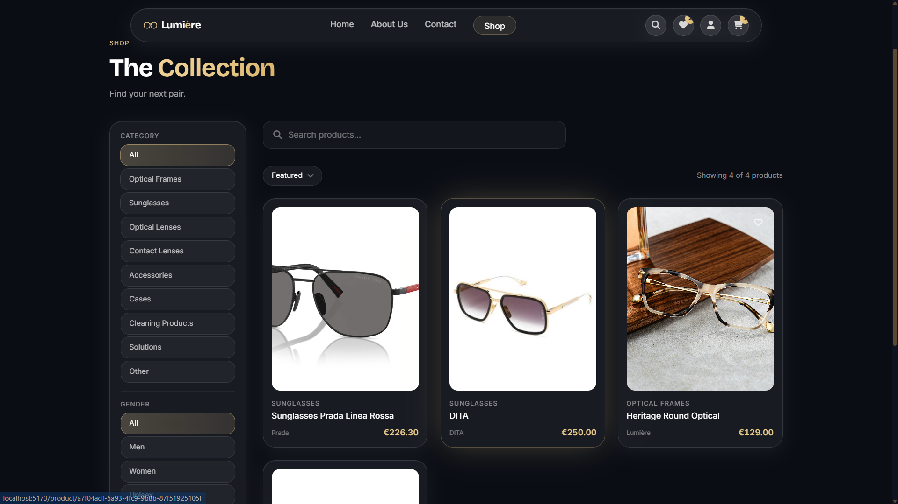
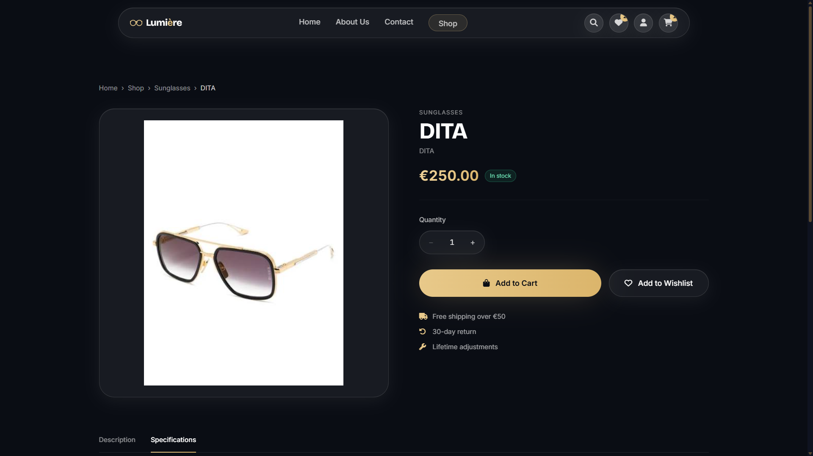
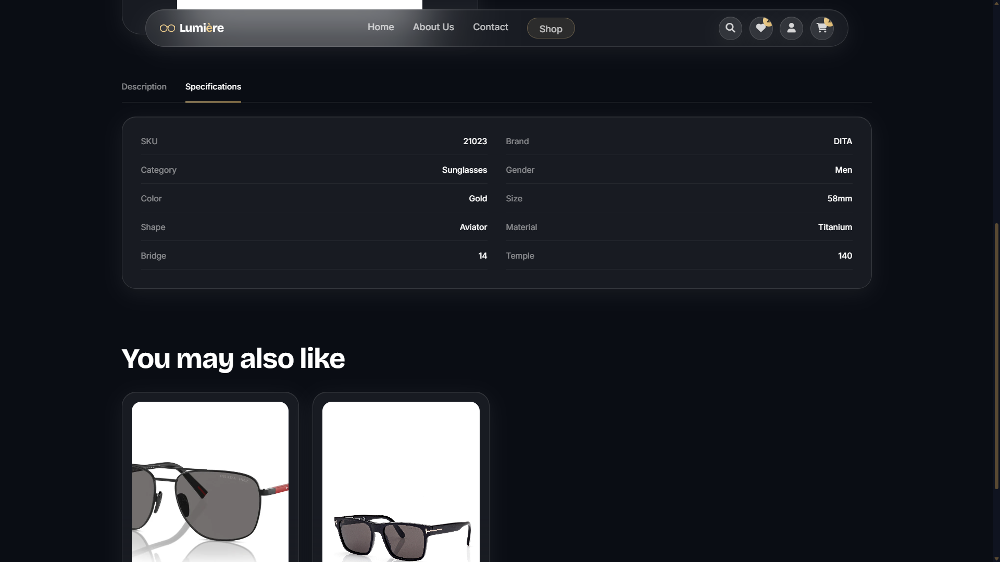
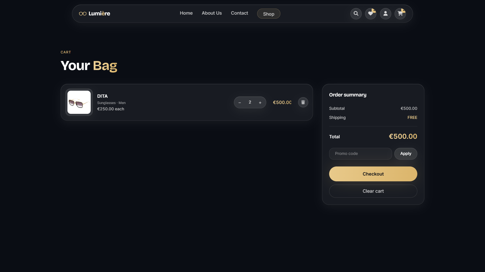
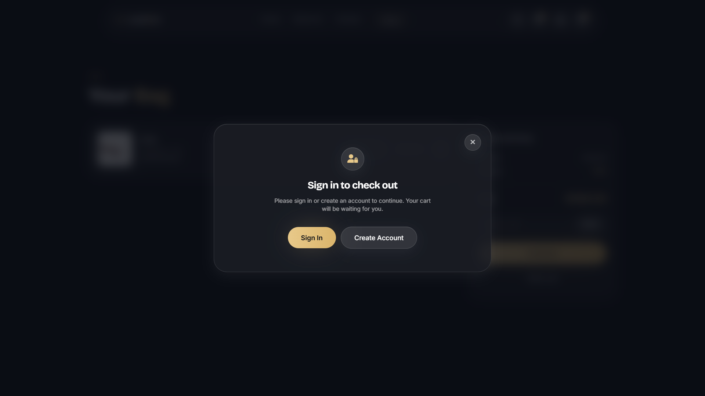
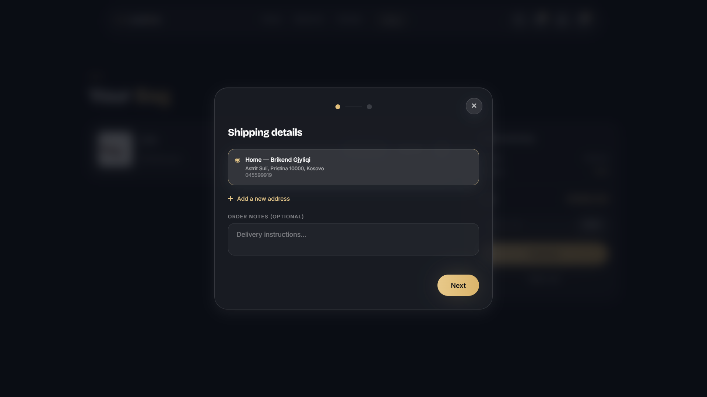
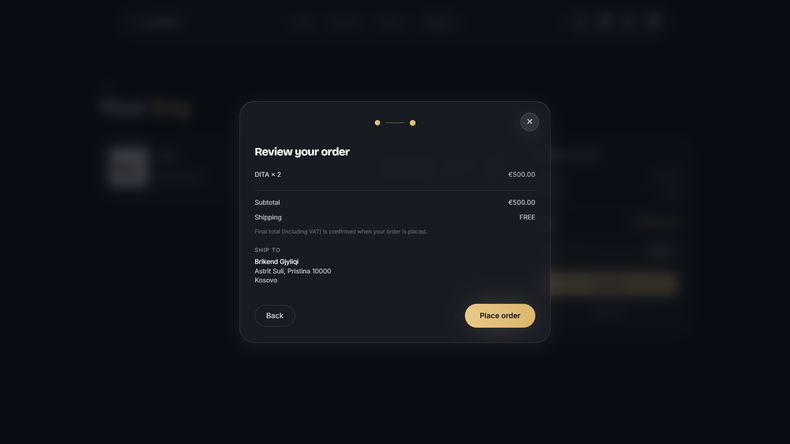
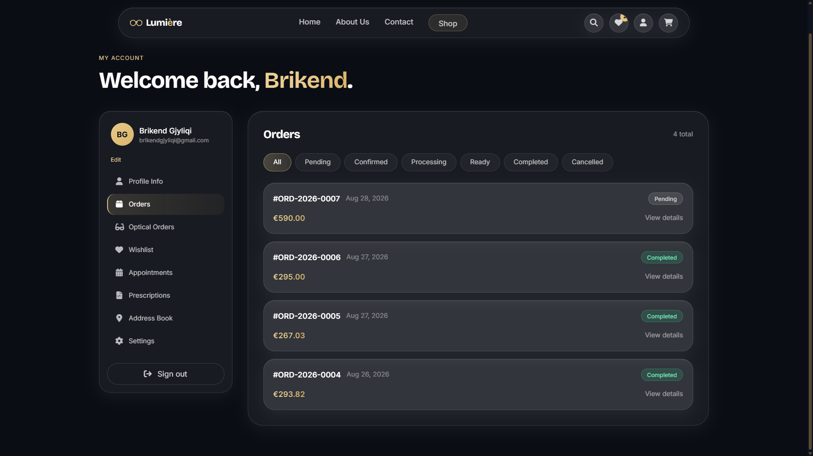
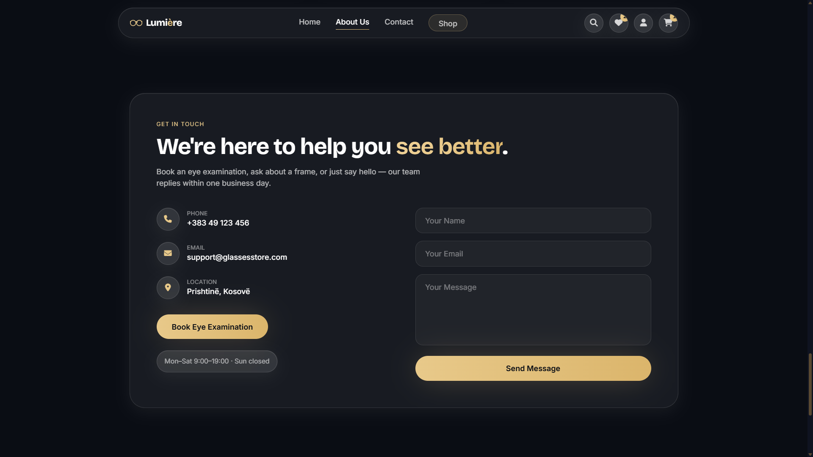
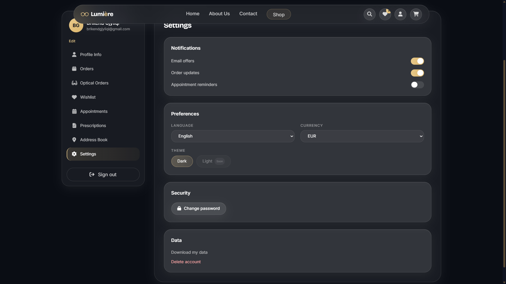
In short
LUMIÈRE isn't just a shop — it's a shop, a staff back office, an in-store POS, and an AI reporting layer, all reading and writing through one Spring Boot API and one PostgreSQL database.
Product and stock data has exactly one source of truth: when an admin changes a price or adjusts inventory, the customer site reflects it immediately and stock never desyncs between the website, the POS, and the admin panel, because there's nothing to desync — it's the same backend answering all three.
It was built in phases — inventory, then checkout, then POS, then the AI assistant — each verified end-to-end before the next was built on top of it. Stock movements in particular were tested for negative-stock rejection and race conditions under simulated concurrent purchases before checkout was allowed to depend on them, using pessimistic locking to keep stock consistent when two orders land at once.
Highlights
Engineering
Auditable inventory
Stock changes are never silent — every adjustment is a logged movement with a type, a reason, and who made it. Guarded against going negative and safe under concurrent requests.
Engineering
JWT auth with token rotation
Access and refresh tokens, with refresh rotation on use. Role-based authorization is enforced server-side, not just hidden behind UI.
Product
One backend, two frontends
The customer website and the staff admin panel are separate Vue apps sharing one Spring Boot API and one PostgreSQL database — no duplicated or drifting product data.
AI
Tool-use, not free-form SQL
The dashboard's natural-language assistant calls a fixed set of read-only reporting endpoints via Claude's tool-use — it can answer real business questions but has no path to touch or corrupt data.
Want to see the code?
The full project is on GitHub — or get in touch and I'll walk you through the architecture.